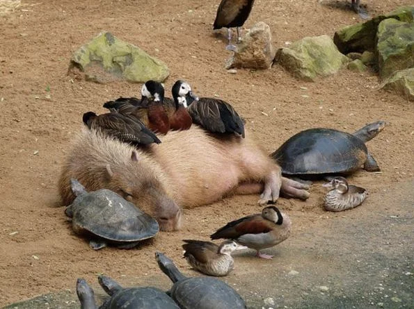
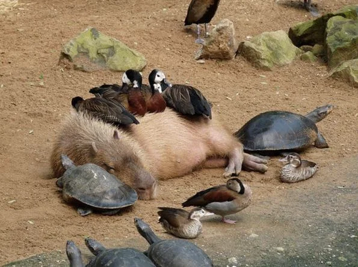

Capybaras et Internet
Les capybaras ont conquis le cœur des internautes grâce à leur calme légendaire. On les voit partout sur Instagram, Twitter ou TikTok, souvent en train de se prélasser au soleil ou de traîner avec d’autres animaux. Ils sont devenus un peu un symbole de calme et de detente sur le web.
Des mèmes amusants montrent des capybaras posés à côté de chiens, chats ou même d’animaux plus inattendus, et ces images sont partagées des milliers de fois. Leur popularité en ligne a aussi permis à beaucoup de gens de découvrir ces rongeurs fascinants et leur comportement social unique.
De plus de grand nombre de mersh (tee-shirt,cup...) et de contenu IA ont été créés suite à se pique de popularité du gros rongeur.
Exemple:
 
